<div class="background">
  <div class="page">
    <div class="heading">
      <h2 class="page-title"><u>THE ROCKETS  v.  SCOTT FOSTER</u></h2>
      <p>
        For the last couple of seasons both players and staff of the Houston Rockets organization
        have complained about the officiating of one specific referee, Scott Foster.  The Rockets 
        style of player is very unique and liekly varies more from the league mean more so than any 
        other team which could lead to slight differences in the way that their games are officiated 
        <span>(Human Error).</span>  However the members of the Rockets, specifically their two best 
        players James Harden and Chris Paul have singled out a single official, <span>out of roughly 
        75 NBA referees</span>, as being biased towards their team and on more than one occasion 
        have blamed Foster for a Rockets loss.  So the question here is are the Rockets correct that 
        Scott Foster is personally biased against the Rockets?  Or do the Rockets just like to complain 
        and blame others for their own shortcomings?<br><br> <span>Check out the links below to read more about 
        the ongoing confilct between Scott Foster and the Rockets organization.</span>
      </p>
      <ul>
        <li><a href="https://ftw.usatoday.com/2019/02/james-harden-referee" target="_blank">A history of James Harden's beef with referee Scott Foster</a></li>
        <li><a href="https://www.espn.com/nba/story/_/id/26051817/james-harden-says-scott-foster-officiate-rockets-games" target="_blank">James Harden says Scott Foster shouldn't officiate Rockets games</a></li>
        <li><a href="https://houseofhouston.com/2019/04/30/houston-rockets-james-harden-scott-foster-team-dictate-narrative/" target="_blank">Houston Rockets: Team should not let Scott Foster dictate the narrative</a></li>
        <li><a href="https://www.sfgate.com/warriors/article/NBA-referee-Scott-Foster-Rockets-Warriors-Game-2-13807222.php" target="_blank">Scott Foster, who has long history with Rockets, to referee Game 2 of Rockets-Warriors series</a></li>
        <li><a href="https://www.theringer.com/nba/2019/4/30/18524450/warriors-rockets-officiating-faq" target="_blank">Will Rockets-Warriors Be Defined by the Officiating?</a></li>
      </ul>
      <hr>
    </div>

    <div class="start">
      <p>
        For this data-analysis, we will be moving away from our our players file <span>2012-18_playerBoxScore.csv</span> and onto 
        another file from the same dataset called <span>2012-18_officialBoxScore.csv</span>.  This file has substantially more columns 
        than the player boxscore file.  Its shape is 44,284 rows by 119 columns and although we will need every row, the majority of 
        the columns are superfluous and won't be needed for our research. As you can see to the right, Jupyter Notebook won't display 
        every column because there are too many.  And in Excel's standard view  at one time you can view columns "A" through "S"
        but given that the spreadsheet goes all the way to column "DO" this also is an inadequate way to go about viewing the columns.
        You can add <span>.values</span> to <span>df.columns</span> to display all 119 columns and then we can decide which ones we need.
      </p>
      <div class="side">
        <h5><u>Hover over Images to Enlarge</u></h5>
        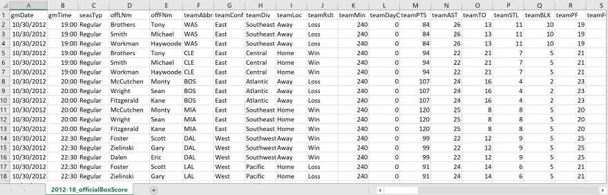
        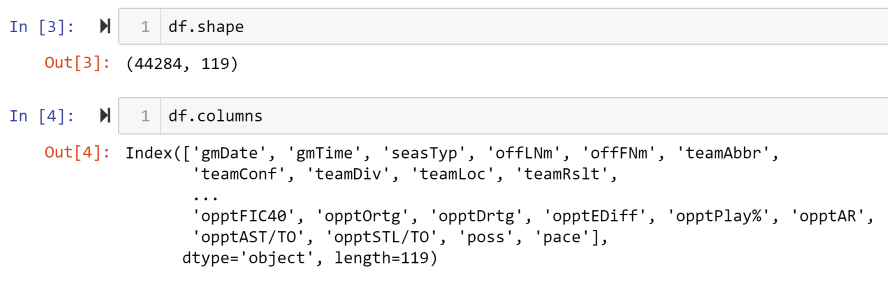
      </div>
    </div>

    <div class="sf_df">
      <p>
        If we only wanted to get rid of a few columns we could use <span>.drop()</span> and indicate what columns we wanted to get rid of 
        in the parenthesis.  However, we want to get rid of more columns than we want to keep so we will create a new dataframe sf_df 
        <span>(Scott-Foster-Data-Frame)</span> and select the columns we do want from our original data frame as seen below.
      </p>
      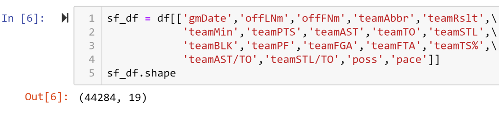
      <p>
        As you can see we still have all 44,284 rows but we have eliminated 100 columns that we didn't need.  Not only does doing this make 
        our data easier to navigate, but now those columns don't need to be searched and NumPy will be able to do its calculations more quickly.  
      </p>
      <p>
        We want to be able to search games reffed by Scott Foster, but currently the referees first and last names are kept seperate, and there 
        could be more than one ref with the first name Scott or the last name Foster.  We need to add a new column called 'name' to our data frame 
        that contains the information in both the columns 'offLNm' and 'offFNm'.
      </p>
      
      <p>
        Now we have a 20th column called <span>name</span> which can now be used to sort games by each refferee.  So now lets create two new data 
        frames one only with games reffed by Scott Foster, and the other with every game not reffed by Foster.
      </p>
      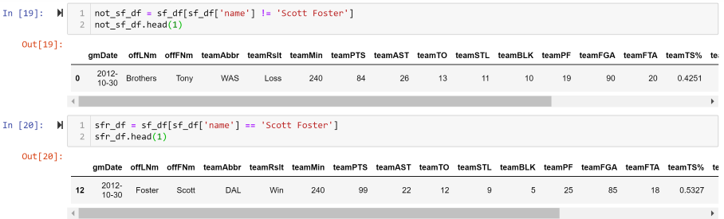
      <p class="directions">
        Next we want to reduce both of our data frames down to only include Rockets games.
      </p>
      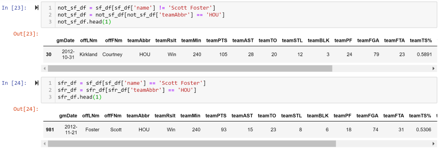
      <p class="directions">
        Now we can compare the Rockets statical performance when Foster is or is not the referee.
      </p>
    </div>

    <div class="mean">
      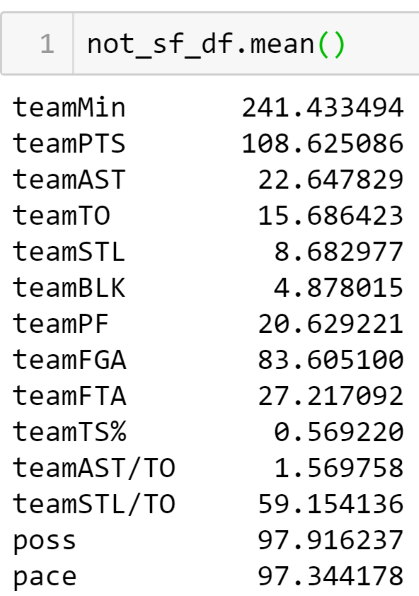
      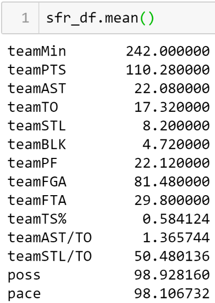
      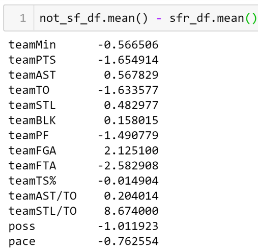
    </div>

    <div class="avgs">
      <p>
        We can use <span>.mean()</span> to find the average of every column in a data frame.
        The first image is the Rocket's averages in games Scott Foster doesn't ref.  The second 
        is the Rocket's average when Foster is the ref.  And the image on the right displays 
        the difference between the averages in the first two.
      </p>
      <p>
        The only stat listed above that remotely suggests that Scott Foster is biased against 
        the Rockets is that the Rockets have 1 1/2 more personal fouls called against them 
        when Foster is the ref.  However that point can largely be negated by the fact that 
        the Rockets also get over 2 1/2 more free throw attempts when Foster is the ref.  This 
        suggests that Scott Foster does in fact call a tighter game with more fouls than other 
        referees.
      </p>
      <hr>
    </div>

    <div class="top5">
      <p>
        Scott Foster is one of the most experienced referees in the NBA.  From 2012 through 2018, 
        there are only three referees who reffed more games than Foster.  Let's quickly check a 
        few other experienced refs and the Rocket's statistical averages while they're reffing.  
      </p>
      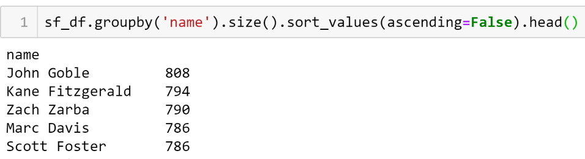
    </div>

    <div class="other4">
      
      <p>
        We can create new data frames for each of our experienced referees listed above to see if the 
        Rocket's performance is greatly impacted by the referee.
      </p> 
    </div>

    <div class="others-avgs">
      <p>
        The images below show the difference in the Rocket's performance when Scott Foster is the ref 
        compared to other experieced referees.
      </p>
      <div class="two-images">
        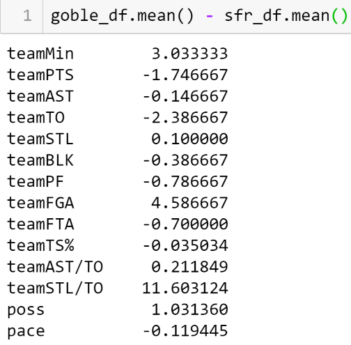
        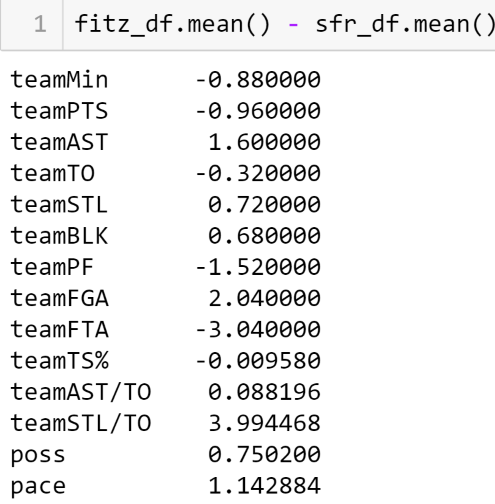
      </div>
      <div class="two-images">
          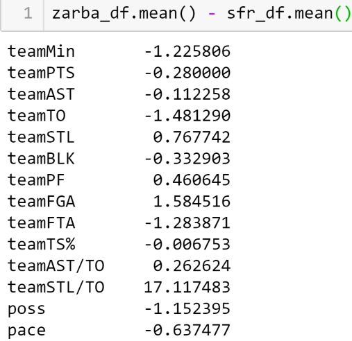
          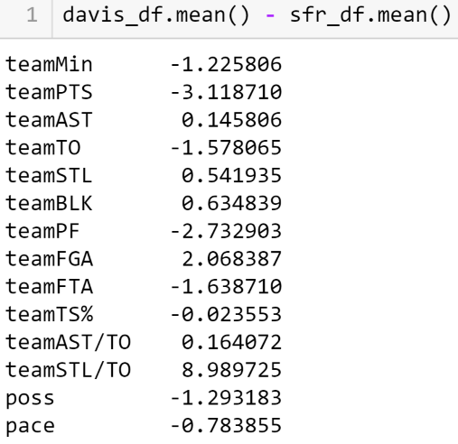
      </div>
    </div>

    <div class="summary">
      <p>
        Comparing Scott Foster against other experiecned referees while reffing the Rockets has not shown
        any significant deviation from the mean. More than anything this shows that Scott Foster calls more 
        fouls than other referees regardless of the team.  The only stat the changes drastically is the 
        steal to turnover ratio, but the reason for that is that there are very few steals and turnovers in 
        a game compared to stats like points or rebounds.  Due to the lower volume a small change in the 
        number of steals, or turnovers, leads to a much more signifcant change in the ratio.  This ratio 
        is largely unaffected by the referee.
      </p>
      <h3><u>IN SUMMARY</u></h3>
      <p>
        There is little to no quantifiable information that suggests that Scott Foster is biased against 
        the Houston Rockets.  Following a loss to the Los Angeles Lakers on Febuary 22nd, 2019 James Harden 
        was quoted saying "Scott Foster, man. I never really talk about officiating or anything like that, 
        but just rude and arrogant. I mean, you aren’t able to talk to him throughout the course of the game, 
        and it’s like, how do you build that relationship with officials? And it’s not even that call. It’s 
        just who he is on that floor."  Shortly after that, Harden went on to say "For sure, it’s personal. 
        For sure. I don’t think he should be able to even officiate our games anymore, honestly."
      </p>
      <p>
        Harden's statements seem to be a more accurate representation of the relationship bewteen Foster 
        and the Rockets than any quantifiable statistic.  Members of the Rockets like to complain to the 
        refs while Scott Foster doesn't like to be complained to.  personally they may not liek each other 
        but ultmately that has no impact on the way Foster refs each game.
      </p>
    </div>

    <div class="navigate">
      <a [routerLink]="['/stat-leaders']">PREVIOUS PAGE</a>
      <a [routerLink]="['/height']">NEXT PAGE</a>
    </div>

  </div>
</div>
